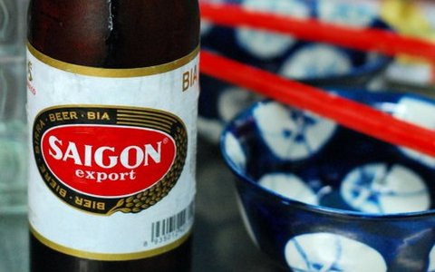
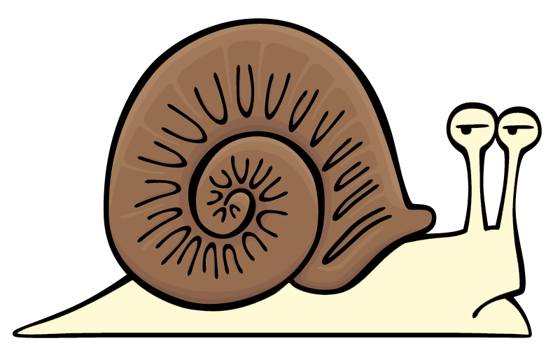
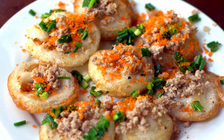
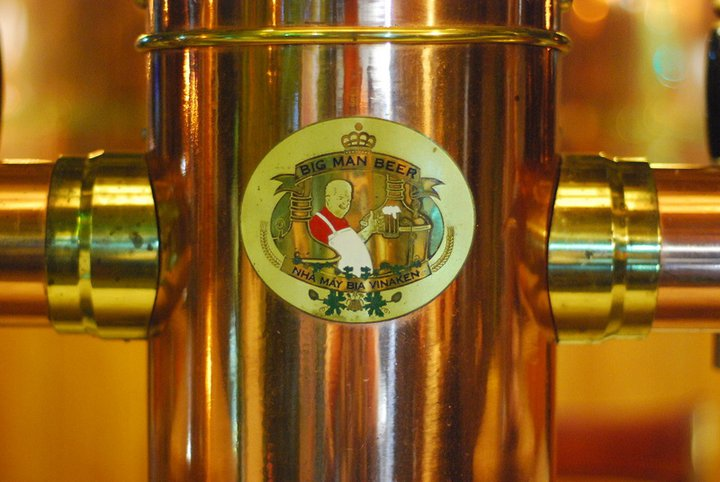
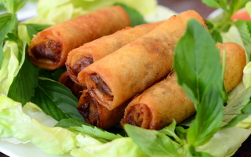

411 on the 404

404
404 Q.7
0122.4661139
Must Try: Beer boiled shrimp
On the Snail Trail

Thao Oc 2
229-231 Hoang Dieu, P.8, Q.4
0122.4661139
Must Try: Peanut Clams
Ban Xeo King

Co Ba Vung Tau
R1-72 Hung Gia 1, PMH Q.7
0854.102027
Must Try: Bahn Kot
Cha Right

Hien Lanh
S14-1 Hung Vuong 2 PMH Q.7
08.5410.5292
Must Try: Bun Cha
Roll Em' Up

Thao Oc 2
229-231 Hoang Dieu, P.8, Q.4
0122.4661139
Must Try: Peanut Clams
Be a Man

Co Ba Vung Tau
R1-72 Hung Gia 1, PMH Q.7
0854.102027
Must Try: Bahn Kot
Bánh Cuốn

Bánh cuốn is made from a thin, wide sheet of steamed fermented[2] rice batter filled with seasoned ground pork, minced wood ear mushroom, and minced shallots.
Read More
Chả Giò

There are 19 varieties of beef noodle soups, depending on how you like to order. The main ingredients of PHO consist of: the broth made from beef bones, beef, rice noodle and different kinds of spices as ginger, star arise, parsley, green and white onions, chopped or shredded.
Read More
Bún Chả
Bún chả is a Vietnamese dish of grilled pork & noodle, which is thought to have originated from Hanoi, the capital of Vietnam.[1] Bun cha is served with grilled fatty pork (chả) over a plate of white rice noodle (bún) and herbs with a side dish of dipping sauce.
Read More
Bánh Khọt
Bún chả is a Vietnamese dish of grilled pork & noodle, which is thought to have originated from Hanoi, the capital of Vietnam.[1] Bun cha is served with grilled fatty pork (chả) over a plate of white rice noodle (bún) and herbs with a side dish of dipping sauce.
Read More